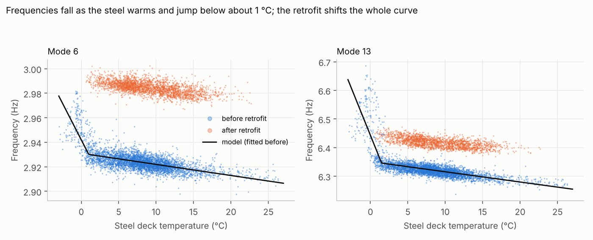
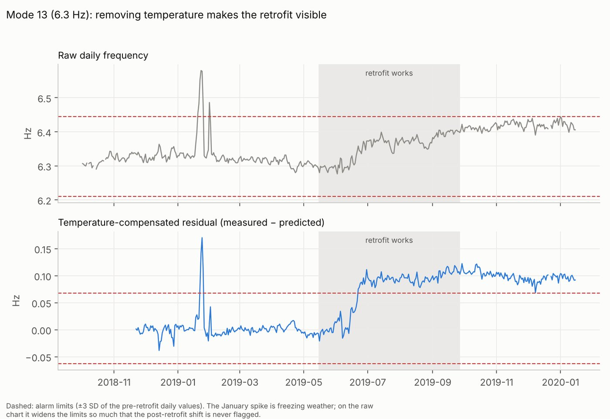

Back to all work
Separating temperature from structural change on a real railway bridge
Temperature moves a bridge's natural frequencies as much as damage or repair does. Before anyone can say what a repair did, temperature has to be taken out.
15 monthsof hourly measured data
+2.1%retrofit effect on mode 6, at fixed temperature
½alarm band width for three of five modes
98%post-retrofit days flagged (was 0%)
The problem
KW51 is a steel bowstring arch railway bridge between Leuven and Brussels, monitored by KU Leuven from 2018 to 2020. Damage was found at its connections, and the bridge was strengthened in 2019.
Steel softens as it warms and stiffens sharply when it freezes, so the raw frequencies swing with the seasons. On a simple alarm chart, that swing hides the retrofit entirely for some modes.
What I did
- Used the five vibration modes tracked at least 80% of the time in every period, and the steel deck temperature.
- For each mode, modelled frequency as a linear function of temperature plus an extra stiffening term below a freezing knot. The model and knot were chosen by blocked cross-validation on the pre-retrofit months only, so nothing after the retrofit influenced the choice.
- Applied the pre-retrofit model unchanged during and after the works. The mean post-retrofit residual is the retrofit's effect at a fixed temperature, with bootstrap intervals.
- Compared alarm charts on raw and temperature-compensated frequencies.
Results


Limitations
- A single freezing knot cannot follow a multi-day cold spell in January 2019; that spike causes most of the remaining false-alarm days.
- The confidence intervals cover measurement noise, not model error. For the noisier modes the estimate moves by up to 0.18 percentage points between comparison windows.
- KW51 is an established benchmark and its authors have studied these effects. This project reproduces that kind of analysis independently and adds per-mode, temperature-adjusted effect sizes with uncertainty.